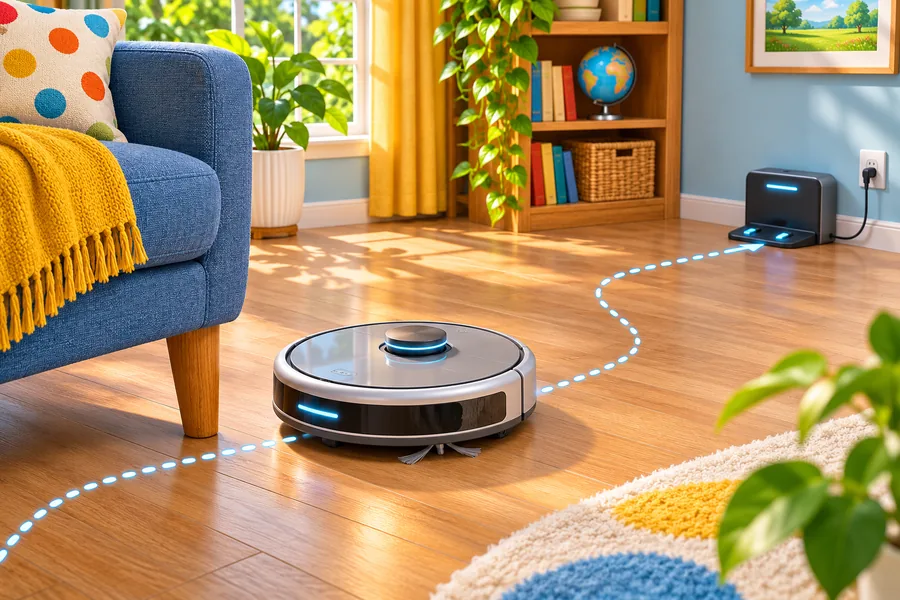

Rô-bốt hút bụi trong gia đình

Chạm để xem ảnh lớnEm đã từng nhìn thấy một chiếc máy tròn nhỏ tự chạy quanh nhà để hút bụi chưa?
Rô-bốt hút bụi là thiết bị có thể tự di chuyển trên sàn để hút bụi và những mẩu rác nhỏ. Một số loại được trang bị cảm biến để nhận biết vật cản, tránh va vào đồ đạc và tìm đường đi trong phòng. Người sử dụng có thể cài đặt thời gian để máy tự làm việc. Tuy nhiên, trước khi bật máy, chúng ta nên dọn dây điện và đồ vật nhỏ khỏi sàn, đồng thời vệ sinh thiết bị định kì. Rô-bốt giúp việc dọn dẹp thuận tiện hơn nhưng không thể thay thế hoàn toàn con người.
Cùng suy nghĩ nhé!
- Rô-bốt hút bụi cần gì để di chuyển và làm việc?
- Em cần chuẩn bị gì trước khi cho rô-bốt hút bụi hoạt động?
Điều thú vị
Một số rô-bốt hút bụi có thể tự quay về đế sạc khi pin gần hết.
Nguồn tham khảo: International Federation of Robotics – Service Robots